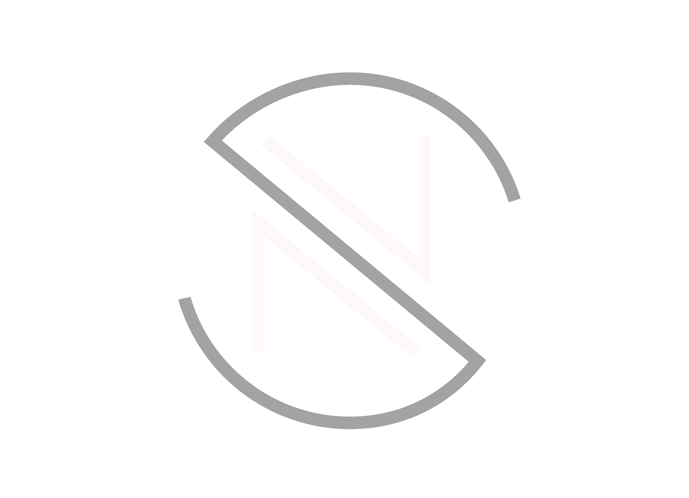
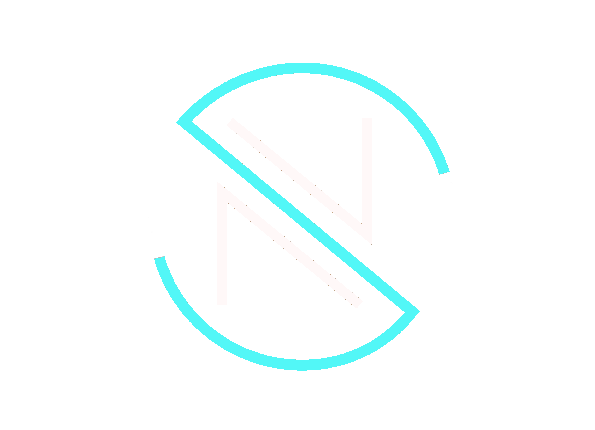

Welcome
My name is Nicholas Sibley. I am a back-end developer based in Florence, Alabama.
I have a Bachelor's of Computer Science degree from Auburn University and a dual specialization MBA from
the University of North Alabama with an Executive specialization and an Information Systems specialization.
I am passionate about pioneering resource-efficient, intuitively designed systems and data-driven decision-making.